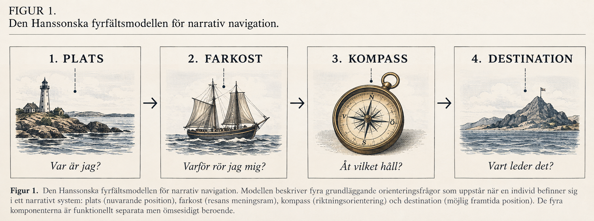

Digital kultur · Idédebatt
Fyrtiosju sidor senare har båten fått en kompass
Felix J.A. Hanssons Farkostprincip möttes av hån, kritik och en fråga från Joel von Gustafsson. Nu har svaret kommit. Det är 47 sidor långt.

När jag senast träffade Felix J.A. Hansson låg ett dokument på hans skrivbord.
Det var sent på eftermiddagen. Vår intervju om den så kallade Farkostprincipen hade pågått betydligt längre än planerat, och större delen av samtalet hade ägnats åt frågan huruvida en farkost fortfarande är en farkost om den inte förflyttar sig.
Jag tänkte inte återvända till ämnet.
Sedan såg jag titeln.
Kompassprincipen: Riktning som sekundärt narrativt orienteringssystem.
Dokumentet var då 47 sidor långt.
Jag antog att detta var ett skämt.
Det var mitt första misstag.
01
Frågan som inte försvann
Kompassprincipen föddes inte i ett laboratorium.
Den föddes under ett gräl.
Under ett samtal mellan Hansson och hans mest högljudda kritiker, skribenten Joel von Gustafsson, försökte Hansson ännu en gång förklara att farkosten i Farkostprincipen är metaforisk.
von Gustafsson svarade med en fråga:
”Varför inte kalla det Kompassprincipen?”
Det var inte meningen att frågan skulle hjälpa.
Hansson blev tyst.
Några veckor senare hade han skrivit 47 sidor.
Detta är i sig inte vetenskapligt anmärkningsvärt. Människor har skrivit betydligt mer om betydligt mindre.
Det anmärkningsvärda är vad som händer på sida fyra.
Hansson ger von Gustafsson rätt.
Inte helt, naturligtvis.
Det hade varit för enkelt.
Några rader senare kommer ett erkännande som sannolikt kostade författaren mer än de resterande 46 sidorna tillsammans:
”En av hans frågor var bättre än hans svar.”
Det är där Kompassprincipen börjar bli intressant.
02
Ett irriterande rimligt problem
Jag hade förväntat mig en kompass.
Det finns ingen.
Åtminstone inte i bokstavlig mening.
Hansson har i stället tagit den ursprungliga Farkostprincipens kanske största svaghet och gjort den till utgångspunkt för en ny modell.
Farkosten, skriver han, beskriver resans meningsram.
Kompassen beskriver riktningen inom den.
Skillnaden låter först som semantik.
Sedan ger Hansson ett exempel.
En användare kan förstå att hon befinner sig i ett digitalt bibliotek. Hon kan förstå vad biblioteket innehåller och varför det existerar.
Ändå kan hon öppna startsidan och tänka:
Vad gör jag nu?
Det är detta Hansson kallar riktningsosäkerhet.
Och här uppstår problemet för den som hoppades kunna avfärda Kompassprincipen lika snabbt som dess föregångare.
Det fenomenet existerar.
03
Fyra frågor
Hansson har dessutom reviderat sin gamla modell.
Tidigare modell
Plats → Farkost → Destination
Reviderad modell
Plats → Farkost → Kompass → Destination
Översatt från Hanssonska:

Var är jag?
Varför rör jag mig?
Åt vilket håll ska jag röra mig?
Vart leder det?
Detta kallar han den Hanssonska fyrfältsmodellen för narrativ navigation .
Namnet är precis så anspråksfullt som det låter.
Modellen är mindre orimlig.
04
Jag ringer Joel
Jag skickar manuskriptet till Joel von Gustafsson.
Fyra timmar senare ringer han.
Joel von Gustafsson
”Han har gjort exakt det jag varnade för.”
Vad menar du?
”Han har gjort kompassen till en teori.”
Jag påminner honom om att det var han som föreslog kompassen.
Tystnad.
”Ironiskt.”
Har du läst hela manuskriptet?
”Jag har gått igenom det.”
Hela?
”De viktiga delarna.”
Vilka delar?
”Rubrikerna.”
05
Problemet med Hansson
Det enklaste sättet att kritisera Felix J.A. Hansson är att kritisera hans språk.
Han kallar förvirring för kompasslös drift.
En missvisande knapp blir falsk nord.
Skillnaden mellan vad användaren tror ska hända och vad som faktiskt händer blir kompassavvikelse.
När flera element konkurrerar om användarens uppmärksamhet uppstår riktningskonflikt.
Och när gränssnittet försöker hjälpa så mycket att hjälpen själv blir förvirrande kallar Hansson det kompassöverbelastning.
Det låter stundtals som om en UX-designer blivit strandsatt på en fyr.
Men när metaforerna tas bort finns fortfarande frågorna kvar.
Kan användaren förutse vart en länk leder?
Förstår hon vilka alternativ som finns?
Kan hon skilja en relevant väg från en irrelevant?
Vet hon hur det aktuella innehållet förhåller sig till resten av systemet?
Det är inte pseudofrågor.
De är vanliga problem inom informationsarkitektur, informationssökning och människa–datorinteraktion.
Vilket leder till ett betydligt mer besvärligt problem.
06
Tänk om Felix har en poäng?
Inte om kompasser.
Det behöver sägas.
Ingen redaktion på Vetenskapsupplagan föreslår att svenska webbplatser omedelbart utrustas med nautiska instrument.
Frågan är om Hanssons uppdelning mellan resa och riktning faktiskt är användbar.
Och efter 47 sidor är mitt svar fortfarande inte självklart.
Det är mer än jag hade väntat mig.
För Hansson har gjort något i detta manuskript som Farkostprincipen ofta misslyckades med.
Han beskriver vad som skulle kunna visa att han har fel.
- Fyra experiment föreslås.
- Begreppen avgränsas.
- Överlappningen med existerande forskning erkänns.
- Modellen presenteras som prövbar snarare än bevisad.
Och på sidan 41 skriver Hansson en mening jag läser två gånger.
Jag skriver ett frågetecken i marginalen.
Sedan stryker jag det.
07
Det verkliga testet börjar nu
Kompassprincipen är inte bevisad.
Den är heller inte ett etablerat forskningsfält bara för att dess upphovsman har gett fenomenen namn.
Det vet Hansson.
Åtminstone skriver han det.
Men teorin har förändrats på ett viktigare sätt.
Den har blivit möjlig att testa.
Och därmed förändras också konflikten.
Joel von Gustafsson behöver inte längre övertyga någon om att Hansson har fel.
Hansson behöver visa att han har rätt.
Det är en mycket bättre situation.
För vetenskapen, åtminstone.
För von Gustafsson är jag mindre säker.
När vi avslutar vårt samtal frågar jag honom vad han tänker göra nu.
”Jag granskar källorna”, säger han.
Vilka?
En kort paus.
”Alla.”